Toolox Image - A Toolbox for General Purpose Image Processing
Copyright (c) 2008 Gabriel Peyre
Contents
The toolbox can be downloaded from Matlab Central http://www.mathworks.com/matlabcentral/fileexchange/loadFile.do?objectId=16201&objectType=FILE
This includes in the path some additional useful scripts.
path(path, 'toolbox/');
Image loading and displaying
The load_image function contains several synthetic examples and can also load arbitrary images. You can provide the size of the image, and you can load batch of images using cell arrays. Optional parameters for the synthetic images are given using the options field.
options.radius = .3;
namelist = {'lena' 'disk' 'chessboard' 'phantom'};
Mlist = load_image(namelist, 256, options);
The imageplot function allows to display sets of images together and link the axes. It handles color images.
clf; imageplot(Mlist,namelist, 2,2);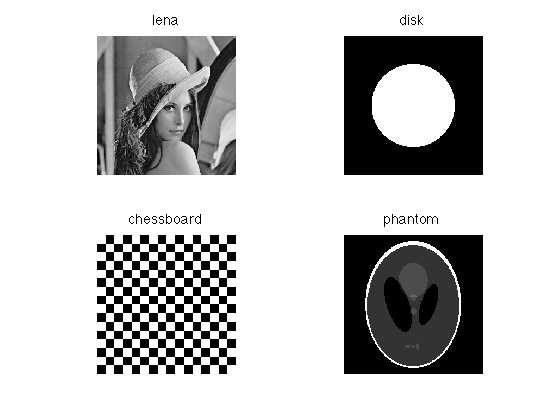
Image Manipulation
You can rotate an image.
M = load_image('lena', 256); Mlist = {}; for i=1:6 Mlist{end+1} = perform_image_rotation(M,i*pi/8); end imageplot(Mlist);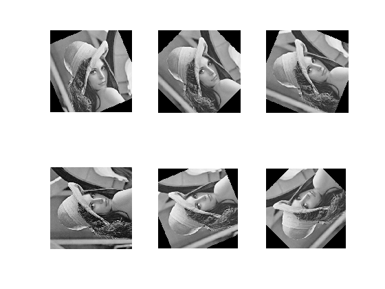
You can (gaussian) blur an image.
M = load_image('lena', 256); Mlist = {}; for i=1:6 Mlist{end+1} = perform_blurring(M,i*4); end imageplot(Mlist);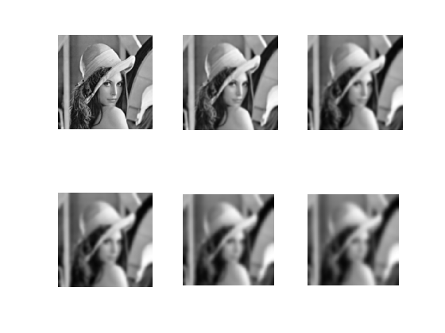
You can crop and resize images.
M = load_image('lena'); M = crop(M,32); Mi = perform_image_resize(M,[256 256]); clf; imageplot({M Mi}, {'Original' 'Interpolated'});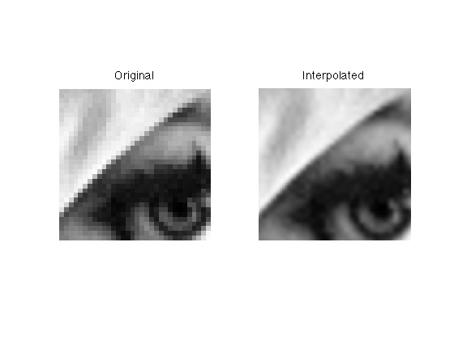
Image Registration
You can perform image registration by first selecting two points on the image (here using clicking).
M = load_image('barb'); % extract the eyes clf; imagesc([0,1],[0,1],M); title('Click on each eye'); colormap gray(256); axis image; axis off; [x,y,b] = ginput(2);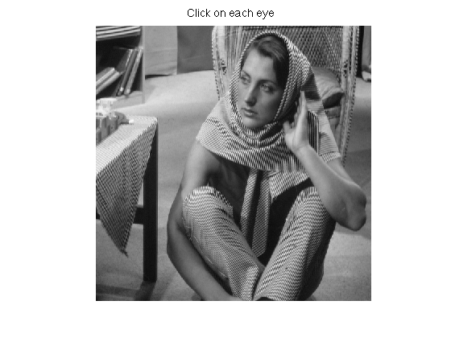
Then a similitude is applied to register the eye position.
% position of the eye u = [x(1) y(1)]; v = [x(2) y(2)]; % target position u1 = [0.3,0.3]; v1 = [0.7,0.3]; % registration M1 = perform_image_similitude(M,u,u1,v,v1); % display clf; imageplot({M M1}, {'Original' 'Registered'});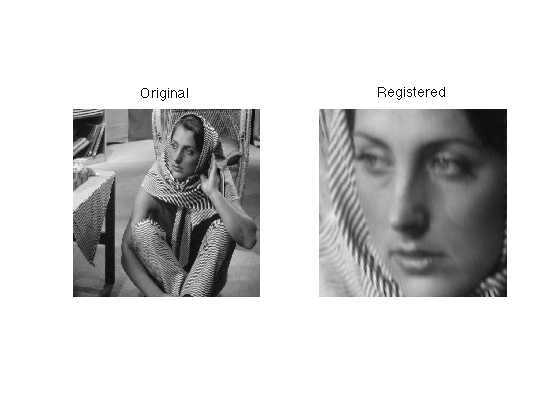
Spacially varying filter
You can provide a set of filters, and for each pixel decide which filter to use (for instance according to local image information). The code is implemented with a mex C code, so it is quite fast. Here we show a simple foveated filtering, where the blurring is stronger in the center of the image.
n = 256;
M = load_image('lena', n);
We first create the set of filters
m = 41; % width of filers p = 20; % number of filters sigma = linspace(0.05,10,p); H = zeros(m,m,p); for i=1:p H(:,:,i) = compute_gaussian_filter([m m],sigma(i)/n,[n n]); end
Then we compute an index map that tells which filter to use (foveation effect).
x = linspace(-1,1,n); [Y,X] = meshgrid(x,x); R = sqrt(X.^2 + Y.^2); I = round(rescale(R,1,p));
At last, we launch the filtering, and display the result.
M1 = perform_adaptive_filtering(M,H,I);
imageplot({M M1},{'Original' 'Foveated'});
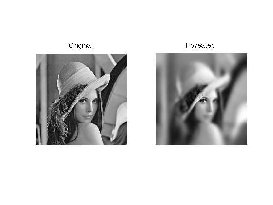 Median Filtering
Median filter is effective to remove salt and pepper impulse noise.
n = 256; M = load_image('lena'); M = rescale(crop(M, n)); % add noise at random locations r = .3; % 30% location corrupted I = randperm(n^2); I = I(1:round(r*end)); M(I) = rand(size(I)); % do the filtering M1 = perform_median_filtering(M,2); % display imageplot({M M1}, {'Original' 'Filtered'});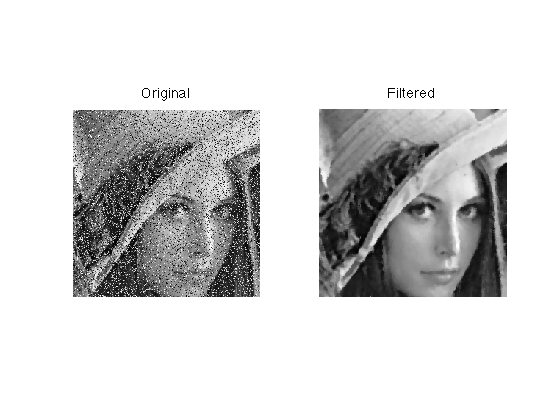
Line integral convolution
The LIC algorithm filters an image along a vector field.
create a vector field (this is done using the functions of the diffc toolbox).
n = 256; % size of the image sigma = 60; % regularity of the vector field options.bound = 'sym'; % boundary handling v = perform_blurring(randn(n,n,2), sigma, options); v = perform_vf_normalization(v);
Now we perform the LIC of an initial noise image along the flow.
M = randn(n); % parameters for the LIC options.histogram = 'linear'; % keep contrast fixed options.verb = 0; options.dt = 1.5; % time steping % size of the features options.flow_correction = 1; options.niter_lic = 2; % several iterations gives better results % iterated lic Mlist = {}; for i=1:4 options.M0 = M; Mlist{end+1} = perform_lic(v, i*4, options); end % display clf; imageplot(Mlist,'',2,2);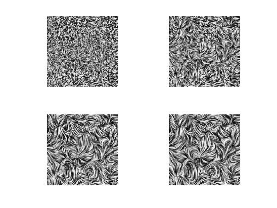
TV denoising
The Sparsity Toolbox implements TV denoising, that minimizes the total variation of the image.
argmin_f |F-f^2 + 2*lambda*TV(f)|
Where F is the noisy image and f is the optimized denoised image. TV(f) is the discrete total variation of the image. lambda controls how much denoising you want to perform.
It corresponds to the Rudin/Osher/Fatemi image denoiser (lagrangian formulation), and works well for images with strong edges (otherwise, wavelets performs better). The TV minimization is performed using the iterative fixed point algorihtm of Chambolle (published in JMIV 2002). A nice feature of the algorithm is that you can give him the target residual value (norm of the noise) in options.etgt and it will track it for you during the iterations, and will automatically select the correct lambda value.
First we load and image and make some noise.
n = 128; M0 = load_image('lena',256); M0 = rescale(crop(M0,n)); sigma = .1; M = M0 + randn(size(M0))*sigma; % display clf; imageplot({clamp(M0) clamp(M)},{'Original' 'Noisy'});

We set the target residual error options.etgt just little larger than the noise level n*sigma, and run the algorithm.
% some parameter for the algorithm options.verb = 0; options.display = 0; options.niter = 300; % number of iterations options.etgt = 1.1*sigma*n; options.lambda = .3; % initial regularization % now we perform the denoising [Mtv,err,tv,lambda] = perform_tv_denoising(M,options);
We display the result.
clf; imageplot({clamp(M) clamp(Mtv)},{'Noisy' 'TV Denoised'});
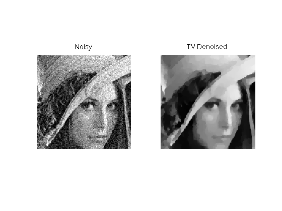 We can keep track of the decay of lambda during the iteration and the Lagrangian decay.
clf; subplot(2,1,1); h = plot(lambda); axis tight; set(h, 'LineWidth', 2); set(gca, 'FontSize', 20); title('Evolution of \lambda'); subplot(2,1,2); lagr = .5*err.^2 + lambda(end)*tv; h = plot(lagr); axis tight; set(h, 'LineWidth', 2); set(gca, 'FontSize', 20); title('Evolution of |y-U x|^2+\lambda |x|_1'); axis([1 options.niter min(lagr) min(lagr)*1.3]);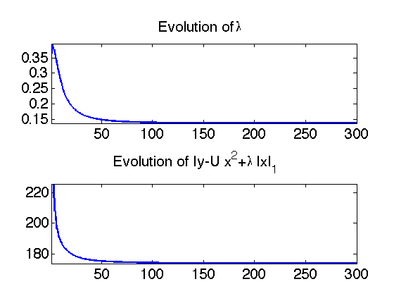